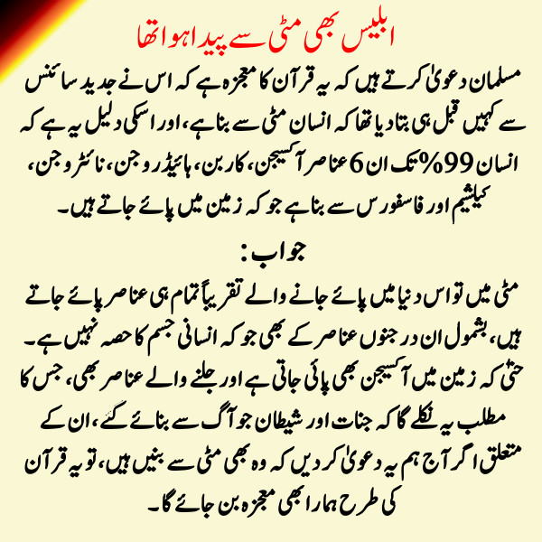

")
مسلمان دعویٰ کرتے ہیں کہ یہ قرآن کا معجزہ ہے کہ اس نے جدید سائنس سے کہیں قبل ہی بتا دیا تھا کہ انسان مٹی سے بنا ہے، اور اسکی دلیل یہ ہے کہ انسان 99% تک ان 6 عناصر آکسیجن، کاربن، ہائیڈروجن، نائٹروجن، کیلشیم اور فاسفورس سے بنا ہے جو کہ زمین میں پائے جاتے ہیں۔
جواب:
مٹی میں تو اس دنیا میں پائے جانے والے تقریباً تمام ہی عناصر پائے جاتے ہیں، بشمول ان درجنوں عناصر کے بھی جو کہ انسانی جسم کا حصہ نہیں ہے۔
حتیٰ کہ زمین میں آکسیجن بھی پائی جاتی ہے اور جلنے والے عناصر بھی، جس کا مطلب یہ نکلے گا کہ جنات اور شیطان جو آگ سے بنائے گئے ، ان کے متعلق اگر آج ہم یہ دعویٰ کر دیں کہ وہ بھی مٹی سے بنیں ہیں، تو یہ قرآن کی طرح ہمارا بھی معجزہ بن جائے گا ۔
بلکہ جو چیز بھی زمین پر نظر آ رہی ہے، وہ سب مٹی سے ہی بنی ہے، چاہے وہ جانور ہوں یا پھر نباتات۔
غالب کمال صاحب کا آرٹیکل: مٹی سے آدم کی تخلیق
قران بلکہ بائبل سے بھی قبل مسوپتامیہ کی قدیم اساطیر میں دیوتاؤں نے انسان کو مٹی سے پیدا کیا، اور اس کو دیوتاؤں کے غلام کے طور پر پیدا کیا گیا۔ مسوپتامیہ کی قدیم ترین یعنی نیپوری(Nippurian) اساطیر میں انکی اور انلیل(Enki and Enlil) کے قصے میں انسان کی مٹی سے پیدائش کا ذکر کچھ اس طرح سے آیا ہے کہ ابتداء میں دیوتا مردوک(بابلی اساطیر میں) یا پھر دیوتا انکی(اسوری اساطیر میں) جب تائمت سے جنگ جیت گیا تو اس نے دیوتاؤں کو زمین اور آسمان میں مختلف کام کاج دیئے 3600 سال تک دیوتا زمین میں سخت مشقت کرتے رہے حتیٰ کہ وہ اپنے کام سے تھک کر بغاوت پر اتر آئے اس وقت ان کی بغاوت کو ختم کرنے کے لئے انکی نے دیوی مامی کو انسان پیدا کرنے کا حکم دیا، تاکہ انسان سخت کام کرے اور دیوتاؤں کو آرام ملے۔ انکی اور انلل کی کہانی میں یوں لکھا ہے:
"بلت الی(Bilit Eli) رحم اور پیدائش کی دیوی موجود ہے
اس کو اولاد پیدا کرنے دو
اور انسان کو دیوتاؤں کے کام کا بوجھ اٹھانے دو
انہوں نے دیوی(بلت الی) کو بلایا اور اس سے کہا
دیوتاؤں کی دائی، عقلمند مامی(Mami)
تو رحم اور تولید کی دیوی ہے، تو انسان کو پیدا کرے گی
پہلے انسان کو پیدا کر، تاکہ وہ طوق پہنے
اس کو طوق پہنا، کہ وہ انلل کا کام کرے
انسان کو دیوتاؤں کے کام کا بوجھ اٹھانے پر معمور کر۔ "مزید:
"یہ انکی کا کام ہے
وہ ہر چیز کو خالص بناتا ہے
اگر وہ مجھے مٹی دے، تو میں یہ کروں گی
انکی نے اپنا فیصلہ سنایا
اور عظیم دیوتاؤں سے خطاب کیا
مہینے کے پہلے، ساتویں اور پندرھویں دن
میں سب کچھ دھو کر پاک کروں گا۔
پھر ایک دیوتا(یعنی کنگو) کو قتل کیا جائے گا۔
اور دیوتاؤں کو اس کے خون سے پاک کیا جائے گا۔
پھر ننتو(Nintu) مٹی کو اس دیوتا کے خون اور گوشت سے ملائے گی
پھر ایک دیوتا اور انسان مٹی میں ایک دوسرے سے مل جائیں گے
اس کے بعد ہمیں ہمیشہ ڈھول کی تھاپ سنائی دے گی۔
ایک بھوت ایک دیوتا کے گوشت سے پیدا ہونے دو۔ "بہت سی قدیم اساطیر میں انسان کی مٹی سے پیدائش آتی ہے، مصری اساطیر میں بھی دیوی خنم(Khunm) انسان کے بچوں کو اپنے کمہار کے پہیے پر مٹی سے بنا کر ماں کی کوکھ میں ڈالتی ہے۔ مسوپتامیہ کی اساطیر میں آتا ہے کہ ابتدائی طور پر جو انسان بنائے گئے وہ دیوتا کنگو(Qingu) کے خون اور گوشت کی آمیزش کی وجہ سے انتہائی طویل العمر اور قوی تھے، حتیٰ کہ زمین ان سے بھر گئی اور دیوتاؤں کو ان کی آبادی کم کرنے کے لئے طوفان(طوفان نوح اس طوفان سے مستعار لیا گیا ہے) بھیجنا پڑا۔
انکی اور انلل کی کہانی میں ایک انسانی جوڑے کے بجائے دیوی مامی سات انسانی جوڑے بناتی ہے اور وہ جوڑے انسانی نسل کی افزائش کا کام کرتے ہیں۔
"اس نے چودہ مٹی کے ٹکڑے لئے
سات دائیں ہاتھ رکھے اور سات بائیں۔
ان کے درمیان ایک اینٹ رکھی
ان چودہ مٹی کے ٹکڑوں سے سات مرد اور سات عورتیں بنائی۔ "قدیم کافرانہ اساطیر جو کہ بائبل یا قران سے کہیں پرانی ہیں بارہا انسان کے مٹی سے بنائے جانے کا ذکر کرتی ہیں، اور ساتھ ہی بائبل و قران میں ان اساطیر سے بہت مماثلت پائی جاتی ہے، مگر یہ اساطیر قران و بائبل سے کہیں زیادہ قدیم ہیں، اس لئے ان کا قران و بائبل سے متاثر ہونا نا ممکن ہے۔ اس صورت میں یہی بات ممکن ہے کہ بائبل و قران یعنی سامی مذاہب کی الہامی کتب میں ان قدیم اساطیر سے سرقہ کیا گیا ہے۔
یہ بھی یاد رکھیں کہ انسان انیسویں صدی سے قبل ان قدیم اساطیری کہانیوں سے نا واقف تھا، مگر انیسویں صدی میں مسوپتامیہ اور عراق میں ماہریں آثار قدیمہ نے کھدائی کے دوران بہت سی ایسی پتھر کی سلیں دریافت کیں جن پر گلگامیش کی کہانی، انکی انلیل کی کہانی، انوما علیش کی کہانی قدیم میخی(Cuneiform Script) رسم الخط میں کندہ تھیں۔ ابتدائی طور پر ان زبانوں کو پڑھنا ایک معمہ تھا مگر قریب پچاس سال کی کوشش کے بعد ماہرین اس قابل ہو گئے کہ ان تختیوں پر کندہ میخی زبان میں لکھی ہوئی کہانیوں کو پڑھ کر سمجھ سکیں۔ اس طرح انیسوں صدی کے اواخر میں ان کہانیوں کی گتھی کھلی اور معلوم ہوا کہ سامی ادیان نے اپنے سے پہلے مذاہب کی اساطیر سے کہاں تک افادہ حاصل کیا۔
اور یہ بھی یاد رکھیں کہ انسان کا مٹی سے بنایا جانا شروع تو مسوپتامیہ سے ہوتا ہے، مگر بعد ازاں ہر تہذیب یعنی مصر، یونان و فارس انہی خطوط پر اپنی اساطیر بناتے ہیں جو مسوپتامیہ کی اسوری اور بابلی اساطیر سے ملتے جلتی ہیں، مگر قدرے مختلف بھی ہیں۔ اس دریافت سے سامی ادیان کی کتب کے الہامی دعوے پر کاری ضرب لگتی ہے۔ اور معلوم ہوتا ہے کہ یہ کیسا الہام ہے جو کہ قدیم اساطیر کا سرقہ کرتا ہے۔
غالب کمال
اسلام سے قدیم مذاہب، جہاں ہر جگہ انسان کو مٹی سے ہی پیدا کروایا گیا:
ذیل کی جگہوں میں آپ کو وہ مذاہب مل جائیں گے جنہوں نے انسان کو مٹی سے پیدا کروایا۔ چنانچہ انسان کا مٹی سے بننا کوئی معجزہ ہے ، تو اسے قرآن کا نہیں بلکہ ان مذاہب کا معجزہ کہلائے گا۔
- Assyro-Babylonian
- Canaan-Ugaritic
- Sumerian
- Ancient Egyptian
- African
- Inca
- Ancient Greeks
- South Californian Amerindians
- Asia
- Australia
- Pacific Islands
- Europe
- The Americas
ان سب کے متعلق تفصیل سے اس لنک پر پڑھئے۔
مسلمان عذر خواہوں کا Hydrogel کیپسول کا مفروضہ:
مسلمان آگے بہانہ بناتے ہیں کہ (لنک):
ب ملحد کہہ دیں گے کہ ان elementss کا انسان کی مٹی سے تخلیق سے کیا لینا دینا، تو جناب سائنس نے مزید عرض کیا ہے کہ مصنوعی طور پر بنائے گئے قدیم سمندری پانی میں مٹی ایک قسم کا hydrogel کیپسول بناتی ہے، اور مٹی کے سوراخوں میں اہلیت ہوتی ہے کہ وہ مائع کو اسفنج کی طرح جذب کر سکیں۔ اربوں سالوں کے دوران، ان مٹی کے hydrogel کیپسولوں میں مقید کیمیکلز پیچیدہ کیمیکل پراسیس سے گذر کر Proteins میں تبدیل ہوئے، جہاں سے زندہ سیل بنا۔ اس مٹی کے hydrogel کیپسولوں میں بند ہونے کی وجہ سے یہ کیمیل پراسیس محفوظ رہے۔
مسلمانوں کا یہ آرگومینٹ تو اور بھی زیادہ احمقانہ ہے کیونکہ:
(1) ابھی تک مکمل طور پر ثابت نہیں سکا ہے کہ آیا واقعی اسی پراسیس سے زندگی شروع ہوئی۔ یہ فقط ایک 'سائنسی مفروضہ' یعنی scientific hypothesis ہے اور تھیوری کی سطح تک بھی نہیں پہنچا۔
(2) اور پھر اس کے مطابق تو زمین صرف کیپسول کا کام کر رہی ہے اور بذاتِ خود زندگی کو پیدا کرنے میں اسکا کا کوئی کردار نہیں، جو کہ مٹی کے کیپسول کے اندر موجود قدیم سمندری پانی کے کیمیکلز پر منحصر ہے۔ چنانچہ مسلمانوں کو کوئی یہ عقل دے کہ یہ سائنسی مفروضہ پیش کر کے وہ انسان کے مٹی سے پیدا ہونے کو ثابت نہیں کر رہے، بلکہ اس کی تکذیب کر رہے ہیں۔
